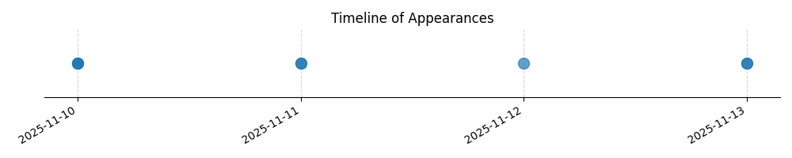

Kategorie: Letecké předpisy
Odpověď C je správná, protože definuje výjimku z pravidla "letadlo ve vyšší hladině dává přednost nižší". Dle leteckých předpisů (např. ICAO Annex 2, Pravidla pro létání) má přednost letadlo v nižší hladině při přibližování k přistání, ale toto pravidlo nesmí být zneužito k ohrožení bezpečnosti letu tím, že by se letadlo zařadilo před nebo předletělo jiné letadlo, které je již v konečné fázi přiblížení. Možnosti A a B se týkají jiných pravidel pro předcházení srážkám, nikoli specifické situace přibližování k letišti.

| Datum výskytu |
|---|
| 2025-11-13 |
| 2025-11-12 |
| 2025-11-11 |
| 2025-11-10 |